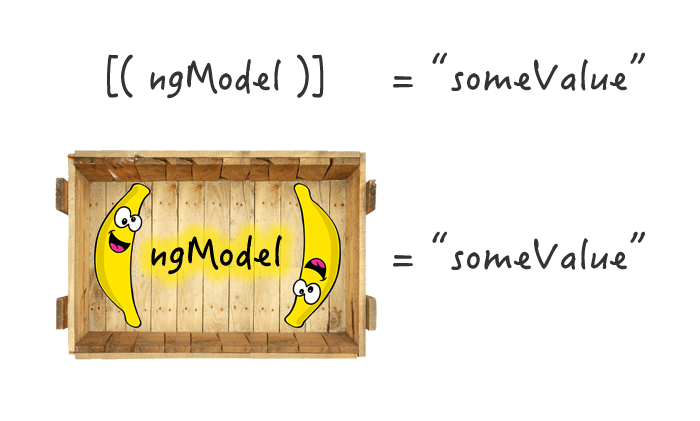

Welcome to the
Angular and Ionic workshop
Michael

Iason

and our awesome team üëç

Let's talk about the Internet a bit

Javascript was created 21 years ago by Brendan Eich it's been updated since then
Along with HTML(for content), CSS(for styling). JS(functionality) is one of the 3 main technologies used in modern web.
Why web technology is the future
- Browsers are almost everywhere(well not in your toaster yet). Develop for many platforms with one codebase.
- Powerful layout engines (Blink, Gecko, Servo, Webkit etc) and JS engines(V8, SpiderMonkey, Nitro etc) make browsers blazing fast
- NodeJS allows for server-side applications closely interlaced with the operating system.
- Best tooling hands down!
- Developer friendly with DevTools(Chrome, Moz) for inspection and transpiled languages ranging from Typescript(.Net friendly) to Elm(it's functional!)
How about um...downsides?
Like all things there are some drawbacks
- Technologies change frequently. You need to keep up.
- Not exactly plug and play for framework setups. Documentation is awesome though!
- You *will* rely too much on external libraries.
Let's go through Git fast. Chop chop!
Sooner or later you'll work with others on projects. Small teams, large team, there's always the need to share your work with others.
How would you share your code and collaborate?

Git is a widely used distributed version control system.
- Helps you keep a history of your work so you can go back if needed
- Allows you to use your codebase into branches each one reflecting a different feature you're working on
- Save code to a repo and share it with your team
- Branches? Wut?
Yes branches. A typical git workflow looks something like...

Some usual git commands could be:
git init # initializes a repositorygit clone git@github.com:ionic-team/stencil.git # clones a remote repo to your computergit checkout hotfix/syncDatetimeIssue # switch to another local branch to work ongit push origin feature/AddSomeCoolStuff # pushes your branch to remote origin
- http://git-scm.com/book (ProGit book)
- https://try.github.io/levels/1/challenges/1 (Git intro tutorial)
- https://github.com/k88hudson/git-flight-rules (excellent cookbook style notes)
...or type man gittutorial for a quick tutorial in your terminal
NPM
Npm stands for Node Package Manager.
A typical web app depends on dozens of packages that each satisfies a specific need. Npm is a command line tool that helps you organize your code into Node modules which you can distribute through the npm website. Similarly you can search for something you need and download it.
# Variants of the npm install command
npm install request
npm install -g request
npm install --save request
npm install --save-dev request
via your command line. But what happens next?
Installing a package writes an appropriate entry in a file called package.json
You can think of package.json as a config file for your project's npm packages.
Among other things it:
- Contains information for what packages your project depends on
- Allows you specify versions of packages
- Lets you share it with another developer who will get the same packages with a simple
npm install
It can help you run build tasks and scripts too!
Example
The following is a very good example of a package.json from a large project called StencilJS, which compiles UI components into web components.
Take me to the Github page please!
Ionic CLI
Last one I promise!


Both Ionic and Angular have CLIs for building and controlling various aspects of your project. On an Ionic project you'll be using mostly Ionic and it's wrapped CLI Ionic cordova
We'll mention the most commands you'll use the most and we suggest to take a look at the full list at your leisure which is located here: https://ionicframework.com/docs/cli/commands.html
ionic start [<name>] [<template>]Scaffolds a new Ionic project using a template. Although not necessary, since you can build your project from zero. It's useful for quick prototyping and testing things or even when you need to setup a project fast.
Templates are available through Ionic and some examples are "blank, tabs, sidemenu, conference, tutorial".
ionic cordova platform [<action>] [<platform>]Performs an action for a target platform, where platfom can be android or ios
Among the possible actions the ones you'll use the most are add and remove
ionic generate [<type>] [<name>]Automatically generates one of the following using a given name:
Component, Directive, Page, Pipe, Provider, Tabs
Example:
ionic generate component fooCreate a component named foo in my current working directory
ionic cordova prepareCopy assets to the target platforms as a step prior to building.
ionic cordova build [<platform>]Build your project for the target platform. Possible options are android and ios
The first Holy Grail
ionic serveHot reloading!
The second Holy Grail
ionic cordova run [<platform>]Why typescript?
Typescript is the weapon of choice for Angular and Ionic dev teams.
- Is a superset of javascript. Transpiles to Javascript(ES5 or ES6) with the
tsccompiler - Provides extra features over javascript.we gonna see them soontm
- Tooling for autocompletion, navigation and refactoring.
- Promotes structured coding. Readability.
- Adds a layer over javascript for static typing! This is never seen in transpiled JS.
- One of the best things Microsoft has done üòà. It is open source with an active community!
First step is to install typescript:
npm install -g typescriptThis will install the
tsc compiler globally in your system. Typescript files end with .ts
tsc hello.tshello.js file.
https://www.typescriptlang.org/play/index.html
Let's try this.
interface Machine{
beepBoop: (string) => void;
}
class Robot implements Machine {
constructor() {
console.log('Initialized!');
}
public beepBoop(phrase?: string) {
console.log("I'm a robot beep boop!");
if (phrase) {
console.log(phrase)
}
}
}
let r2d2 = new Robot();
r2d2.beepBoop("Help me, Obi-Wan Kenobi. You're my only hope.");
Let's jump through some features of Typescript.
Types...duh!
let isDone: boolean = false; // boolean
let times: number = 5; //numbers
let someCoolFloat = 5.2; //also a number
let friends: Array<string> = ['Max', 'Agatha']; //array of strings
let isClicked: any = true; // any is the catch-all type
Also more types like null, never, void, undefined... and many more
You can also create your own types and even make unions, intersections, nullable types, polymorphic, have type guards and assertions and many more.
People with strongly-typed backgrounds do actually appreciate these. e.g.Haskellers
Classes (as advertised on ES6!)
class Greeter {
greeting: string;
constructor(message: string) {
this.greeting = message;
}
greet() {
return "Hello, " + this.greeting;
}
}
let greeter = new Greeter("world");
A note about this.
Is everyone familiar with OOP? Classes and Objects?
In object-oriented programming you need a way to refer to the object for accessing properties, methods etc. The keyword this is used to refer to the current object in thisno pun intended context
The way 'this' is scoped is the same as in Javascript. But by using let declarations and arrow functions we alleviate some problems.
Functions
// standard JS function
function add(x, y) {
return x + y
}
// anonymous function
let myAdd = function(x, y) { return x + y };
// arrow function
let myAdd = (x, y) => {
return x + y;
}
// class method
class Foo{
bar() {
return 1;
}
}
Special mention to Decorators
Decorators are a special kind of syntax that can be applied to classes, methods, properties, accessors and parameters.
It's a way to add metadata and annotations to your code that the compiler sees and interprets accordingly!
Looks like this:
@classDecorator
class Greeter {
property = "property";
hello: string;
@someMethodDecorator(true, 42)
constructor(m: string) {
this.hello = m;
}
}
Apart from these Typescript supports the usual for loops, if/else, try/catch statements. Also enums, interfaces, modules, namespaces etc.
If C# and JS had a baby, it would be Typescript!
These things are out of scope for the second part of the presentation so we suggest you take a look at your own pace.
Some people in this room can learn a language by using it.
For the rest of us the best resource available is the official online docs
https://www.typescriptlang.org/docs/home.html


Let's dive into Angular
Features
- Transparent Model to View Synchronization
- Code generated => Less code, in comparison with JQuery which needs a lot of manual stuff
- Promotes structured app architecture
- UI Perfomance
- Great on X-platform apps and browsers(polyfilled if needed)
- aaaand...
Cool stuff like:
- Form builder
- Change Detection
- Templating
- Routing(if you need one)
- Annotations, Observables, Shadow DOM and more
Architecture in Angular

Templates
src/app/hero-list.component.html
<h2>Hero List</h2>
<p><i>Pick a hero from the list</i></p>
<ul>
<li *ngFor="let hero of heroes" (click)="selectHero(hero)">
{{hero.name}}
</li>
</ul>
<app-hero-detail *ngIf="selectedHero" [hero]="selectedHero"></app-hero-detail>
src/app/hero-detail/hero-detail.component.html
<div *ngIf="hero">
<h2>{{ hero.name | uppercase }} Details</h2>
<div><span>id: </span>{{hero.id}}</div>
<div>
<label>name:
<input [(ngModel)]="hero.name" placeholder="name"/>
</label>
</div>
</div>
Components
src/app/hero-list.component.ts
@Component({
selector: 'app-hero-list',
templateUrl: './hero-list.component.html',
providers: [ HeroService ]
})
export class HeroListComponent implements OnInit {
heroes: Hero[];
selectedHero: Hero;
constructor(private service: HeroService) { }
ngOnInit() {
this.heroes = this.service.getHeroes();
}
selectHero(hero: Hero) {
this.selectedHero = hero;
}
}
Metadata
Metadata tells Angular how to handle this component.
- selector -> Name to use it in HTML.
<app-hero-list></app-hero-list> - templateUrl -> Path to template
- providers -> Services to register
- More(animation, changeDetection etc)
Data binding

Property binding
selectedHero of outer component binds to hero property of app-hero-detail
<h2>Hero details</h2>
<app-hero-wrapper>
<app-hero-detail [hero]="selectedHero"></app-hero-detail>
</app-hero-wrapper>
@Component({
// metadata here
})
export class AppHeroDetailComponent{
@Input() hero: Hero;
constructor(){
console.log(this.hero); //gets the value through property binding!
}
}
Event binding
<button (click)="onSave()">Save</button>
<app-hero-detail (deleteRequest)="deleteHero()"></app-hero-detail>
import { EventEmitter } from '@angular/core';
@Component({
// metadata here
})
export class AppHeroDetailComponent{
@Input() hero: Hero;
@Output() deleteRequest:EventEmitter<null> = new EventEmitter<null>();
constructor(){
// let's say something triggers the deleteRequest Like
setTimeout(()=>{
this.deleteRequest.emit();
}, 1000);
}
}
One more example
import { Component, EventEmitter, Input, Output } from '@angular/core';
@Component({
selector: 'app-sizer',
template: `
<div>
<button (click)="dec()" title="smaller">-</button>
<button (click)="inc()" title="bigger">+</button>
<label [style.font-size.px]="size">FontSize: {{size}}px</label>
</div>`
})
export class SizerComponent {
@Input() size: number | string;
@Output() sizeChange = new EventEmitter();
dec() { this.resize(-1); }
inc() { this.resize(+1); }
resize(delta: number) {
this.size = Math.min(40, Math.max(8, +this.size + delta));
this.sizeChange.emit(this.size);
}
}
Two-way binding
Does exactly what you think.
<app-sizer [size]="fontSizePx" (sizeChange)="fontSizePx=$event"></app-sizer>
<app-sizer [(size)]="fontSizePx"></app-sizer>
[(x)] requires a settable property x and a corresponding event named xChange
[(ngModel)] is a special case
Lifecycle hooks

Example AfterViewInit hook
export class AfterViewComponent implements AfterViewInit {
private prevHero = '';
// Query for a VIEW child of type `ChildViewComponent`
@ViewChild(ChildViewComponent) viewChild: ChildViewComponent;
ngAfterViewInit() {
// viewChild is set after the view has been initialized
this.logIt('AfterViewInit');
this.doSomething();
}
}
A look on structural directives, ngIf and ngFor
<p *ngIf="true">
Expression is true and ngIf is true.
This paragraph is in the DOM.
</p>
<p *ngIf="false">
Expression is false and ngIf is false.
This paragraph is not in the DOM.
</p>
Special mention
<ion-button round outline color="primary" [hidden]="someBool"></ion-button>
<div *ngFor="let hero of heroes; let i=index; let odd=odd; trackBy: trackById">
({{i}}) {{hero.name}}
</div>
For every element in the array heroes, spawn one div element with whatever it contains
I.E. if one of your hero objects had name 'Xena' and was 2nd it would show '(1) Xena'
Component Styles
@Component({
selector: 'app-root',
template: `
<h1>Tour of Heroes</h1>
<app-hero-main [hero]="hero"></app-hero-main>
`,
styles: ['h1 { font-weight: normal; }']
})
export class HeroAppComponent {
/* . . . */
}
@Component({
selector: 'app-root',
template: `
>h1>Tour of Heroes>/h1>
>app-hero-main [hero]="hero">>/app-hero-main>
`,
styleUrls: ['./hero-app.component.css']
})
export class HeroAppComponent {
/* . . . */
}
Note about components and styles
- Angular components have default styles or no styles at all.
- For a strikingly beautiful app you have to style your components, not only code their behaviour
-
Plain css works but we recomment using SASS


Ionic
What is it? It's a UI framework. Provides a selection of UI components that are ready to use out of the box.
So...just UI??? Hell no. Lots of awesome stuff build on top of Angular.
Features
- Free and Open Source
- Built on Angular, integrates with Cordova
- Most "Native Like" framework ATM
- Default UI is beautiful, can be customized
- Tools & Services
- Awesome community, lots of resources
Other frameworks available like:
- Angular Material
- Semantic UI
- Kendo UI
- PrimeNG
- ng-lightning
What can I find in Ionic?
- Simple elements for input, images, radiobuttons(all ionic styled and enhanced)...
- Complex elements for slides, lists with sliding items, FABS, refreshers...
- Services for navigation, modal/popup overlays, handling input/gestures...
- Theming capabilities and ionicons
- Cordova native plugins(e.g.Bluetooth)
- Tools(Ionic CLI)
We built our app in Ionic!
One last note
So Cordova then Angular then Ionic and lots of config...Sounds like a mess.
It isn't. All you need is to install Ionic.